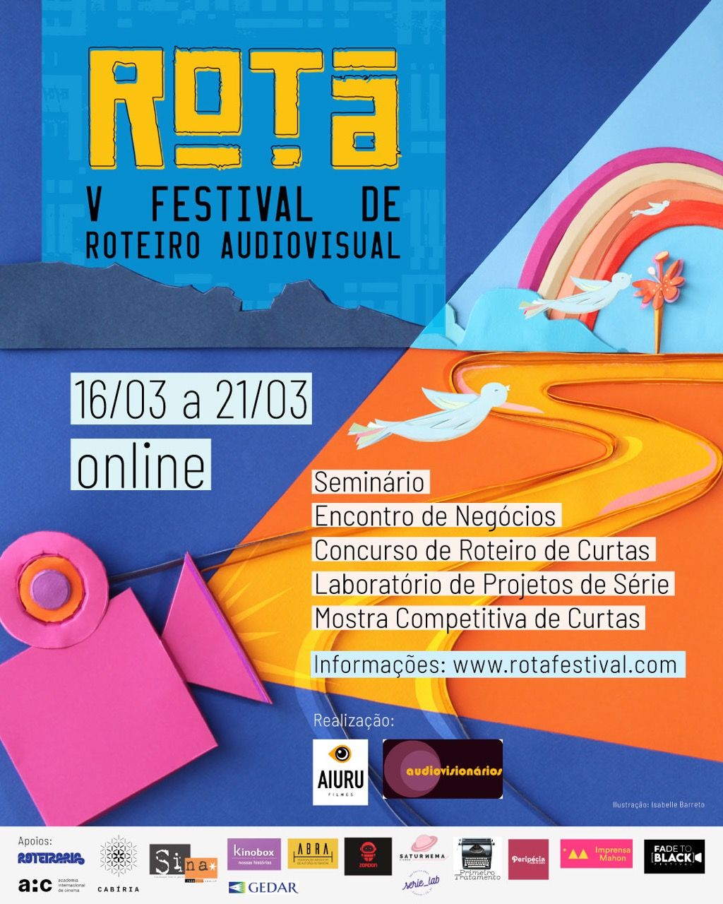

Com a proposta de ser um espaço de debate e encontro entre profissionais e estudantes, o IV ROTA - Festival de Roteiro Audiovisual acontecerá todo ON-LINE entre os dias 25 e 29 de novembro de 2020. Pelo quarto ano consecutivo, o Festival, focado principalmente nos roteiristas iniciantes, compreende 5 linhas de ação:
Concurso de Roteiros de Curtas
Mais informações
O Concurso de Roteiros de Curtas-metragens tem o objetivo de promover, através de premiação, roteiros de curta–metragem de ficção, escritos por estudantes e/ou iniciantes e, com isso, abrir portas para sua realização. As inscrições ficam abertas de 27 de julho a 21 de agosto. A Seleção dos Finalistas será divulgada até 15 de novembro de 2020. A Cerimônia de Premiação acontecerá no dia 29 de novembro de 2020.
O Encontro de Negócios tem o objetivo de promover o encontro dos roteiristas com produtoras, distribuidoras e programadoras de televisão. Roteiristas inscrevem projetos audiovisuais de qualquer formato, gênero e duração e o Festival faz a ponte com as empresas, marcando reuniões de 20 minutos, de acordo com o interesse das empresas nos projetos inscritos. As inscrições ficam abertas de 03 de agosto a 25 de outubro. O Encontro de Negócios acontecerá no dia 27 de novembro de 2020.
Encontro de Negócios
Mais informações
Laboratório de Projetos de Série
Mais informações
O Laboratório de Projetos de Série é composto por consultorias, que acontecerão nos dias 25 e 26 de novembro, e de Pitching, que acontecerá no dia 29 de novembro. O Lab tem o objetivo de promover, através de premiação, bons projetos de estudantes e iniciantes contribuindo com seu desenvolvimento e apontando caminhos para a sua viabilização. A Curadoria selecionará 10 projetos finalistas para participar do Laboratório. Cada selecionado receberá consultorias de 4 profissionais reconhecidos, e apresentará o Pitching do seu projeto para o Júri Oficial do IV ROTA e para o público, que elegerão o Melhor Pitching pelo Júri Oficial e pelo Júri Popular.
A Mostra Competitiva de Curtas-metragens, que acontecerá de 25 a 29 de novembro, tem o objetivo de promover, através de premiação, roteiristas estudantes e/ou iniciantes por seus curtas–metragens de ficção e documentários, e, com isso, dar visibilidade aos roteiros dos curtas selecionados durante o evento.
Mostra Competitiva de Curtas
Mais informações
Seminário
Mais informações
O Seminário, que acontecerá nos dias 25, 26, 27 e 28 de novembro, poderá compreender palestras, mesas de discussão, um estudo de caso, master classes e a programação e os convidados serão divulgados em data a ser confirmada. A participação no seminário é gratuita e os links para as palestras estarão disponíveis no site e nas redes sociais do festival.